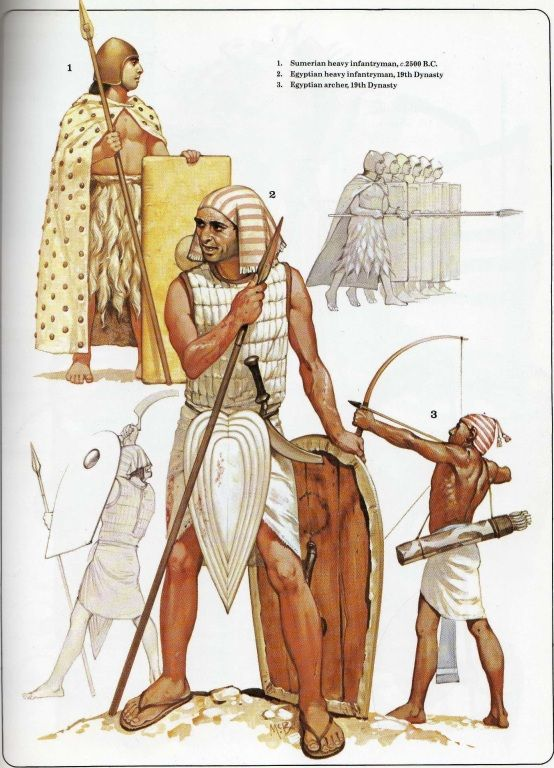

A R M O R
Armor has been an important part of warfare since the beginning of human conflict. Though many kinds of armor exist, the basis of any piece of armor is simple, to protect the user from harm. Nearly every kind of armor function through absorbing and distribute the force of an attack upon the covering, to limit penetration and focal force. Most times, armor is consistent of layers of various thick, processed materials that serve to protect the wearer from harm.
Though the look, effectiveness, and materials of armor have changed over time, the types of pre-modern armor remain largely the same.
Padded
 Image Source: Pinterest Image Source: PinterestThe first kind of armor is simply made of fabric. Fabric armors have been present in the history of warfare for a long time. It has been the most common kind of armor as it could be made quickly, and cheaply from widely available resources such as wool or cotton.
Fabric armor is often created by having layers of fabric stacked on top of one another, or stuffed by adding rags, wool, or skins or any kind of "fluffy stuff" within the layers. This can be seen as something of a "warrior's underwear" if you will, being the first layer of armor worn in the arming process. For those less wealthy such as conscripted soldiers, this quilted jacket could be their only layer of protection. This kind of armor can be found under many names such as a padded jack, gambeson, doublet, aketon. The effectiveness of this kind of armor depends on multiple factors such as the material, thickness, and quilting.
Leather
Image Source: Quora Image Source: PinterestAlthough the accuracy of leather armor's depiction in media often is a topic of debate among scholars, it is undeniable that examples of leather armor has existed in the world. It's creation was simple as well, it required the skin (or skins) of animals to be processed into a wearable shape.
Leather armor can be made in many ways, from simply sewing and cutting the leather to form a vest or a jacket, or layering it similarly to how fabric armors are made, or connecting many hardened plates, to boiling the leather in wax before shaping it creating what is called a cuir boulli. Even after the development of more advanced metal armors, leather armor was still commonly used as under layers, protection between plates and limb protection, even in the Black Powder Era, leather armor was still used, called "buff coats" that were meant to protect from cuts. Leather armor is very common among nomadic groups such as the Mongolian and Hunnic tribes, as well as East Asian kingdoms such as Korea.
Brigandine
Image Source: Pinterest Image Source: PinterestA brigandine is simply the next step up from the two previous kinds of armor by adding metal plates to one side of the softer material. The brigandine was more affordable and easier to make than mail or plate armors, while offering more protection than padded or leather armors, therefore being the "middle-man".
The brigandine was very much one of those "hand-me-down" kinds of affairs often being made of recycled metal from irreversibly damaged plate armors or cuirasses where the existing metal was made into squares. Metal plates of varying amounts (anywhere from eight to thousands) made of iron or steel are attached to the material by using rivets. The varying method in creation has made many sub-armors or similar kinds such as the jack of plates, splinted armor.
Mail and Lamellar
Image Source: Quora Image Source: PinterestScale armor is the earliest form of mail, being made of several individual scales made of various material (peculiar ones including seeds and horn) and the earliest examples being 15th Century BC. It has since branched off into various forms of armor including lamellar, plate and chain, chainmail, ringmail and is the most successful form of pre-modern armor made.
Mail armor is created by enclosing small metal rings through butting, riveting, or punching in order to create a mesh covering, as opposed to the previously mentioned forms of armor which have a material to attach to, this kind is made purely of metal. On the other hand, lamellar armor is created through linking together layered metal plates to make a jacket, all of these often have slits below the waist to accommodate horseback riding. Even after the development of plate armor, mail armor is still used below plate, and today is even present as cut-safe gloves in kitchens.
Plate
Image Source: Pinterest Image Source: PinterestPlate armor has long been equated with the medieval knight due to the sport of jousting and fabulous parades. Plate armor is where the wearer is entirely encased within a specially made metal suit. These suits were undoubtably expensive, custom-made, new, or used, costing the equivalent of many months or even years wages of the wearers and were worn by men-at-arms, knights, and nobles. But the money would be well worth it as full plate harnesses are nearly impervious in battle from slashes, piercing damage, and even blunt damage.
This kind of armor would be made by an assembly chain of artisans consisting of a smith, armorer, polisher, and leather-worker, first the metal would be heated and hammered to remove impurities by a smith, then sent to an armorer who would shape the metal into the desired form, then sent to a polisher who would finish and fit the plates, then finally sent to a leather-worker where the pieces would be attached and either sent to the customer or put up for sale. Though incredibly durable, these armors were not invincible as the wearer could be defeated by drowning, stabs through slits, and extreme blunt force. More common and mass produced protective plate armors are cuirasses and breastplates, which were not required to be as fitted. Kings and other nobles often commissioned extravagantly elaborate plate armors representing their nation's military power and wealth.